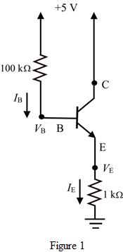
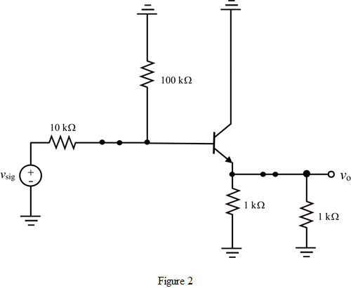
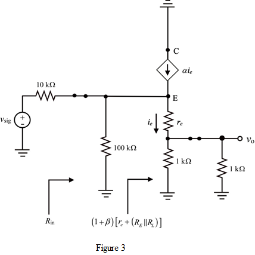
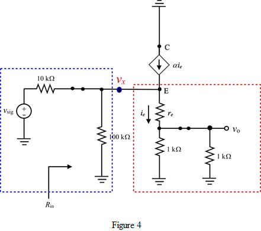

Use equation (1) to determine the value of emitter current at  .
.
Therefore, the value of emitter current for is .
is .
(a)
Refer to the circuit diagram of common emitter amplifier in Figure P6.152 in the text book.
Draw the DC equivalent circuit of the circuit.

Apply Kirchhoff’s voltage law to the base-emitter loop.
Simplify further.
…… (1)
Use equation (1) to determine the value of emitter current at .
Therefore, the value of emitter current for is .
Determine the emitter voltage.
Therefore, the value of emitter voltage for  is .
is .
Determine the base voltage.
Therefore, the value of base voltage for  is .
is .
Determine the value of emitter current at  using equation (1).
using equation (1).
Therefore, the value of emitter current for is.
Therefore, the value of emitter voltage for  is .
is .
Determine the base voltage.
Therefore, the value of base voltage for is.
(b)
Draw the AC equivalent circuit diagram.

The small signal equivalent model is shown in Figure 3.

Determine the value of input resistance  using Figure 3.
using Figure 3.
Determine the value of input impedance at .
.
Simplify further.
Therefore, the value of input resistance for  is .
is .
 .
.
Simplify further.
Therefore, the value of input resistance for  is .
is .
(c)
Draw the AC equivalent circuit of the circuit as shown in Figure P6.152 in the text book.

Take the overall circuit into two parts as shown in Figure 4.
Use voltage divider rule to determine the voltage ratio .
…… (1)
Use voltage divider rule to determine the voltage ratio .
…… (2)
Use equations (1) and (2) to determine the overall voltage gain.
Determine the overall voltage gain for .
.
Therefore, the overall voltage gain for  is .
is .
 .
.
Therefore, the overall voltage gain for  is .
is .